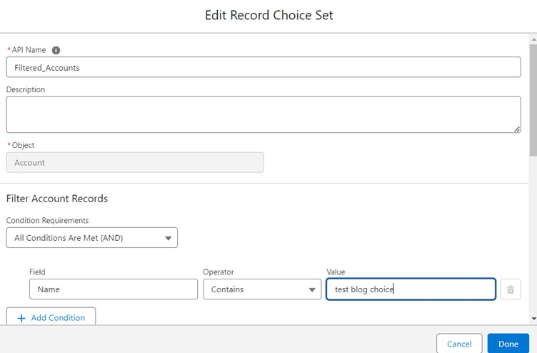
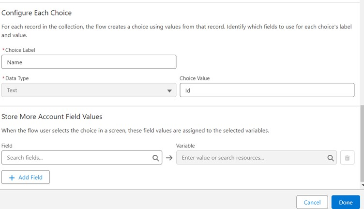
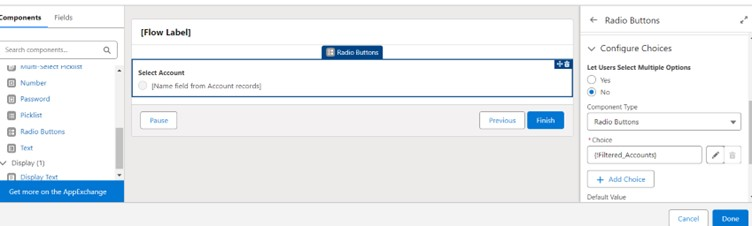

Lookups and some Lightning components, such as dependent picklists and lookups, are not yet supported in Salesforce Field Service mobile flow screens. However, there is an alternative that gives the same functionality: a Record Choice Set.
An example
Say we need to show a filtered list of Accounts (where the name contains "Test Blog Choice") for a Contact on a flow screen. Here is how to do it.
1. Create a Record Choice Set
Create a new Record Choice Set, select Account as the object, and set the filter criteria you need.

2. Configure the choice label and value
Set the Choice Label to Name and the Choice Value to Id.

3. Add a Radio Buttons component to a screen
Create a screen and add a Radio Buttons component. Some points to consider:
- The Lookup component is not available for Field Service mobile flows.
- Radio buttons show the filtered list of records both in the mobile app and in flow debug.
- A picklist does not show the filtered records in the mobile flow, although it does in debug mode. That is why we use radio buttons instead.

4. Connect the choice set
Give the component a label and an API name, then add the Record Choice Set as the radio button choice.
Voilà! The lookup alternative is ready for your Field Service mobile flow.